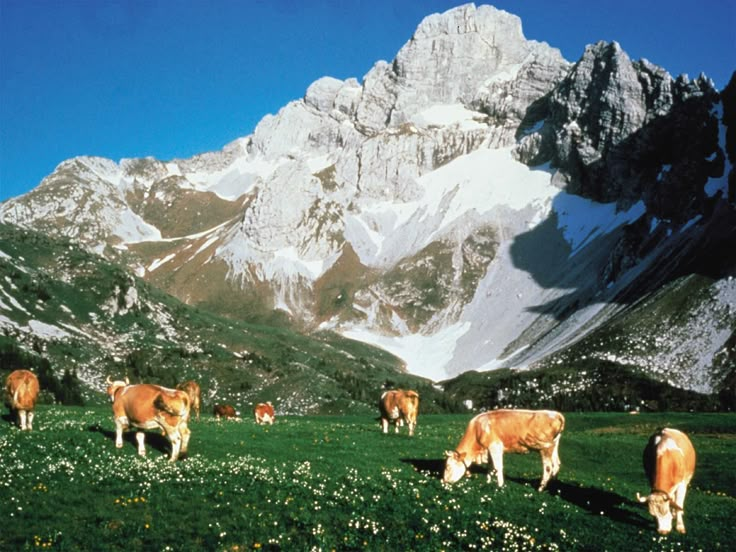
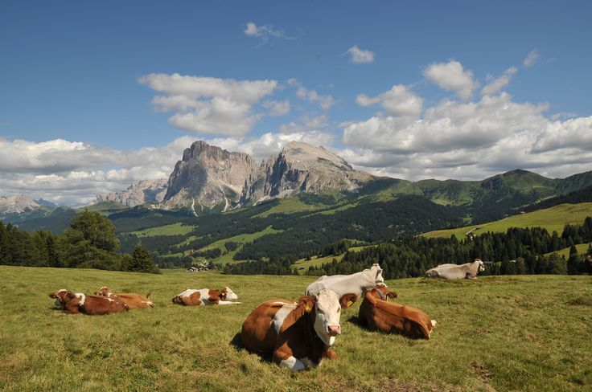
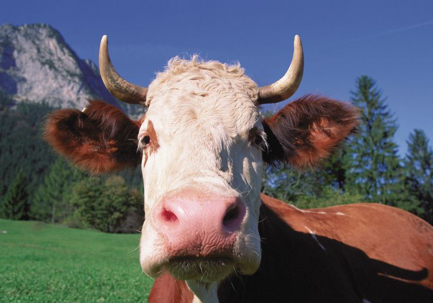
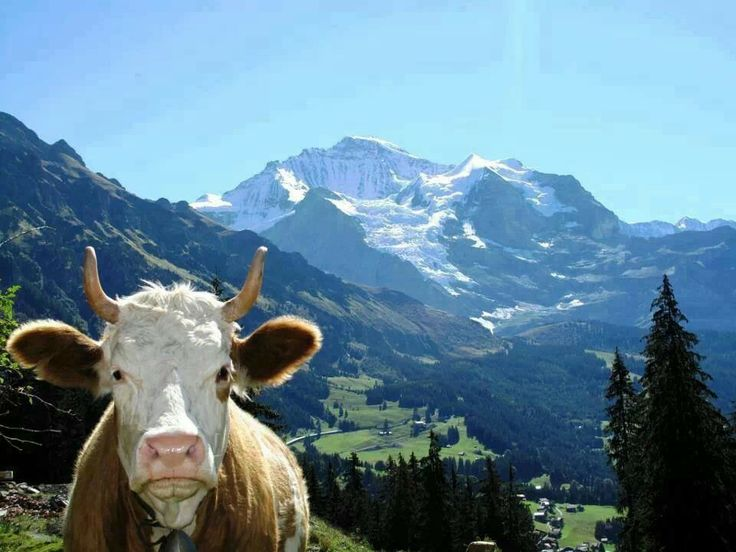

every autumn in the alps
the cows are coming home!
An Alpine tradition of flower crowns, cowbells and a whole-village party.
what is almabtrieb?
All summer, cows munch grass high up in the mountains. In late September or early October, farmers walk them back down to the village for winter. If the summer went well, the cows wear flower crowns, ribbons and big bells.
- Austria
- Germany
- Switzerland
- Italy
a summer up high
For hundreds of years, Alpine farmers have sent their cows to mountain meadows for about 100 days each summer. The walk home in autumn became a celebration.
Cows from different farms share a meadow, so at the end they're sorted at the Viehscheid and go back to their owners.
party time

the parade
Cows clang their bells through town.

music & dancing
Bands, dirndls and lederhosen.

market stalls
Cheese, snacks and crafts.
around the world
Moving animals with the seasons is called transhumance. Lots of places celebrate it!
- alpabzug Switzerland · cows
- fiesta de la trashumancia Madrid, Spain · sheep
- redyk Poland · sheep
- trailing of the sheep Idaho, USA · sheep
- yaaral & degal Mali · cattle swim the Niger River